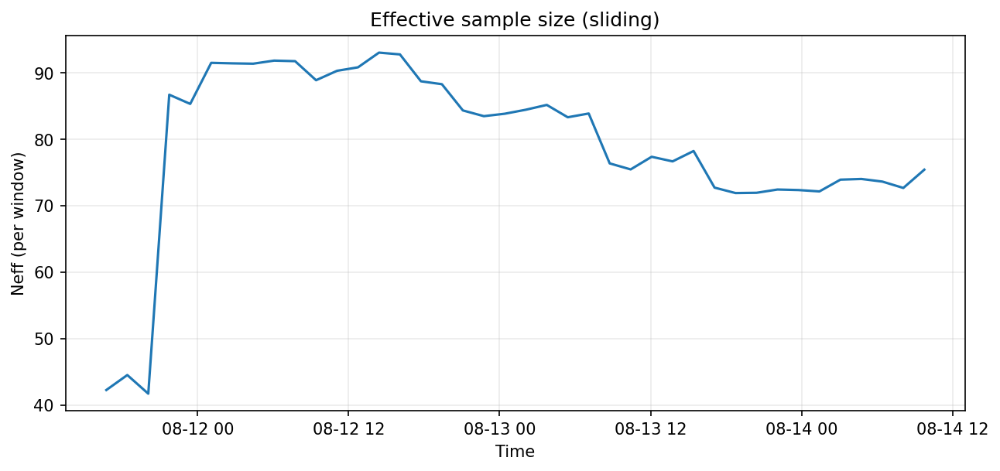

Your 1,000 Price Bars Are Actually 12: Statistical Inefficiency in Crypto
Adapting statistical inefficiency analysis from molecular dynamics to quantify correlation and effective sample size in BTC price data.
Autocorrelation of Returns
Sliding τint
Effective Sample Size
Notebook & code: GitHub